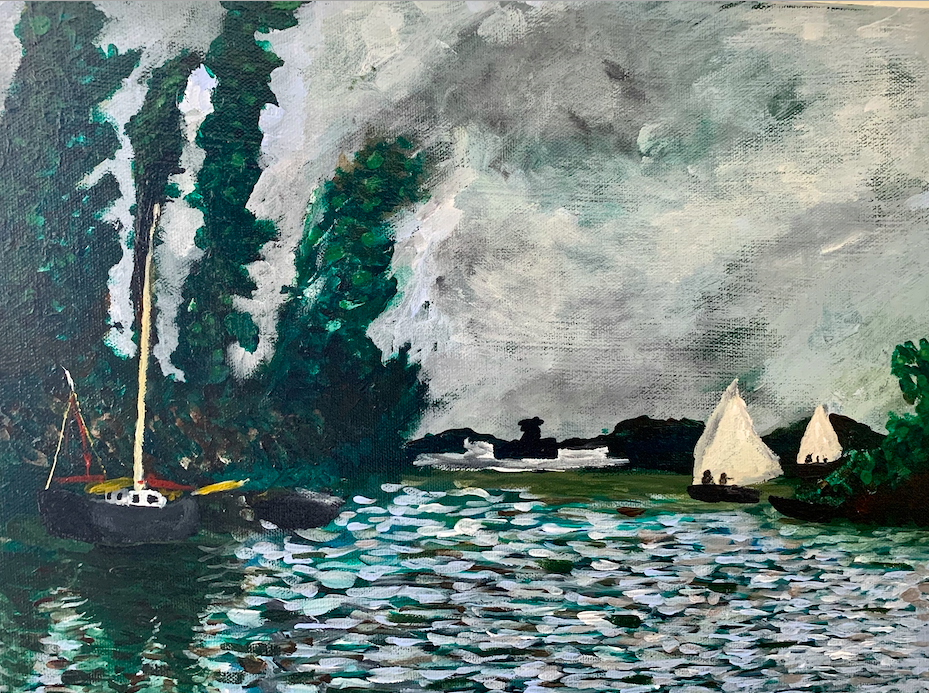

Ever since I was young I have had a passion for enjoying and creating art. My favorite style of art takes after Claude Monet famous for his impressionist style lily pad paintings. Impressionism is characterized by thin yet visible brush strokes and realistic depictions of the changing qualities of light overtime. To mimic realistic light patterns in my artwork I try to carry every color used in my painting throughout the entire painting, not just in one area. Below is an image of one of my artworks.

In my free time I enjoy hiking, backpacking, and when I lived in California, going surfing at the beach. Additionally, I am a member of UW-Madisons Hoofer Ski and Snowboard club. I am lucky to have had the opportunity to do several long-distance treks with my family including one through Patagonia as well as the Tour du Mont Blanc. The Tour du Mont Blanc was a 144 mile route through Italy, Switzerland, and France that we did over the course of two weeks staying at hostels along the way. Below is a picture taken from the Tour de Mont Blanc, and if you look closely you can see me in the background.
As a member of Badger Volunteers on campus, prior to the pandemic I volunteered at a local elementary school's after school program for 2.5 hours once a week playing with and helping children ages 5-8 with their homework.